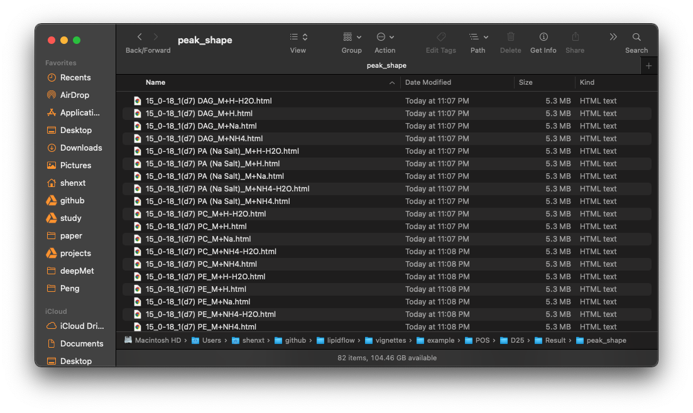
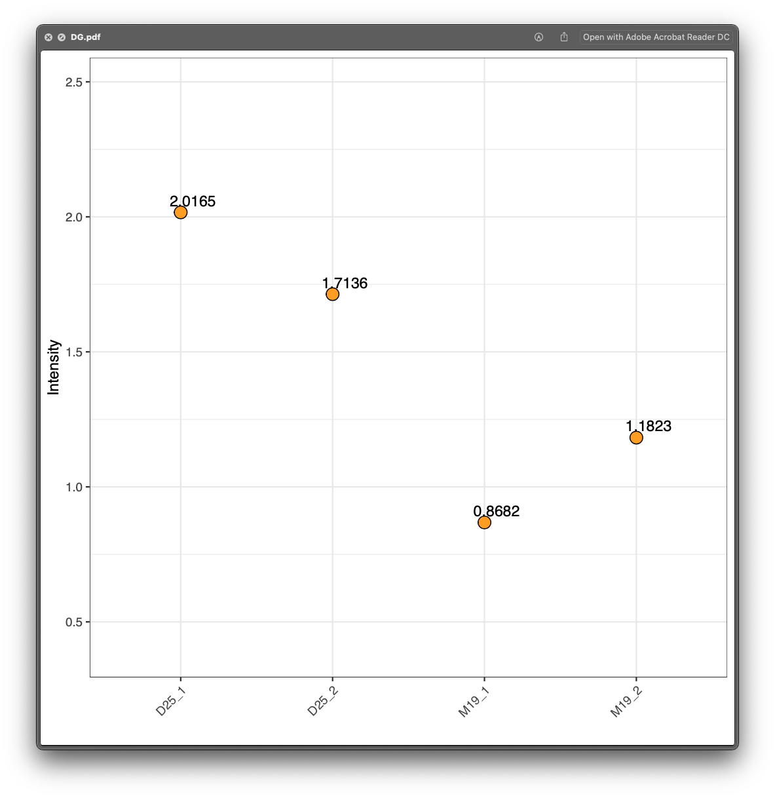

Example of lipid absolute quantification
Xiaotao Shen PhD (https://www.shenxt.info/)
Chuchu wang PhD
School of Medicine, Stanford UniversityCreated on 2021-02-09 and updated on 2021-02-28
Source:vignettes/example_lipid_absolute_quantification.Rmd
example_lipid_absolute_quantification.Rmd
Demo data to show how to use lipidflow
Here we use the demo data to show how to use lipidflow for lipid absolute quantification.
Organize the demo data
First, we need to get the demo dataset.
library(lipidflow)
library(tidyverse)
pos_data = system.file("POS", package = "lipidflow")
neg_data = system.file("NEG", package = "lipidflow")
path = file.path(".", "example")
dir.create(path)
file.copy(from = pos_data, to = path, recursive = TRUE, overwrite = TRUE)
#> [1] TRUE
file.copy(from = neg_data, to = path, recursive = TRUE, overwrite = TRUE)
#> [1] TRUENow there will be a example folder in your work directory. And in the ./example folder. There are two folders: POS and NEG. The are two groups for each mode: “D25” and “M19”. And each group has two repeats.

Next, we should set the match list between internal standards and lipid class.
- Positive mode:
match_item_pos =
list(
"Cer" = "d18:1 (d7)-15:0 Cer",
"ChE" = c("18:1(d7) Chol Ester", "Cholesterol (d7)"),
"Chol" = "Cholesterol (d7)",
"DG" = "15:0-18:1(d7) DAG",
"LPC" = "18:1(d7) Lyso PC",
"LPE" = "18:1(d7) Lyso PE",
"MG" = "18:1 (d7) MG",
"PA" = "15:0-18:1(d7) PA (Na Salt)",
"PC" = "15:0-18:1(d7) PC",
"PE" = "15:0-18:1(d7) PE",
"PG" = "15:0-18:1(d7) PG (Na Salt)",
"PI" = "15:0-18:1(d7) PI (NH4 Salt)",
"PPE" = "C18(Plasm)-18:1(d9) PE",
"PS" = "15:0-18:1(d7) PS (Na Salt)",
"SM" = "d18:1-18:1(d9) SM",
"TG" = "15:0-18:1(d7)-15:0 TAG"
)- Negative mode:
match_item_neg =
list(
"Cer" = "d18:1 (d7)-15:0 Cer",
"Chol" = "Cholesterol (d7)",
"ChE" = c("18:1(d7) Chol Ester", "Cholesterol (d7)"),
"LPC" = "18:1(d7) Lyso PC",
"LPE" = "18:1(d7) Lyso PE",
"PC" = "15:0-18:1(d7) PC",
"PE" = "15:0-18:1(d7) PE",
"PG" = "15:0-18:1(d7) PG (Na Salt)",
"PI" = "15:0-18:1(d7) PI (NH4 Salt)",
"PPE" = "C18(Plasm)-18:1(d9) PE",
"PS" = "15:0-18:1(d7) PS (Na Salt)",
"SM" = "d18:1-18:1(d9) SM"
)
Run get_lipid_absolute_quantification() function
Then we run get_lipid_absolute_quantification() function. Please note that path need to set as example.
get_lipid_absolute_quantification(
path = "example",
is_info_name_pos = "IS_information.xlsx",
is_info_name_neg = "IS_information.xlsx",
use_manual_is_info = FALSE,
lipid_annotation_table_pos = "lipid_annotation_table_pos.xlsx",
lipid_annotation_table_neg = "lipid_annotation_table_neg.xlsx",
output_eic = TRUE,
ppm = 40,
rt.tolerance = 180,
threads = 3,
rerun = FALSE,
which_group_for_rt_confirm = "D25",
match_item_pos = match_item_pos,
match_item_neg = match_item_neg
)
#> -------------------------------------------------------------------
#> Get retention times of all Internal standards...
#> -------------------------------------------------------------------
#> Positive mode...
#> Output peak shapes...
#> 1 2 3 4 5 6 7 8 9 10 11 12 13 14 15 16 17 18 19 20 21 22 23 24 25 26 27 28 29 30 31 32 33 34 35 36 37 38 39 40 41 42 43 44 45 46 47 48 49 50 51 52 53 54 55 56 57 58 59 60 61 62 63 64 65 66 67 68 69 70 71 72 73 74 75 76 77 78 79 80 81
#> Done
#> Negative mode...
#> Output peak shapes...
#> 1 2 3 4 5 6 7 8 9 10 11 12 13 14 15 16 17 18 19 20 21 22 23 24 25 26 27 28 29 30
#> Done
#> -------------------------------------------------------------------
#> Get relative quantification tables...
#> -------------------------------------------------------------------
#> Internal standard positive mode...
#> 15:0-18:1(d7) DAG 15:0-18:1(d7) PA (Na Salt) 15:0-18:1(d7) PC 15:0-18:1(d7) PE 15:0-18:1(d7) PG (Na Salt) 15:0-18:1(d7) PI (NH4 Salt) 15:0-18:1(d7) PS (Na Salt) 15:0-18:1(d7)-15:0 TAG 18:1 (d7) MG 18:1(d7) Lyso PC 18:1(d7) Lyso PE C18(Plasm)-18:1(d9) PC C18(Plasm)-18:1(d9) PE Cholesterol (d7) d18:1 (d7)-15:0 Cer d18:1-18:1(d9) SM rac-16: 0 (d5) PI (3, 5) P2 rac-16: 0 (d5) PI (5) P Cholesterol Output peak shapes...
#> 1 2 3 4 5 6 7 8 9 10 11 12 13 14 15 16 17 18 19
#> Done
#>
#> Lipid positive mode...
#> AEA(15:1) CL(22:6/18:0/20:0/22:5)_1 CL(22:6/18:0/20:0/22:5)_2 Cer(d15:1/15:0)_1 Cer(d15:1/15:0)_2 Cer(d15:1/15:0)_3 Cer(d16:0/18:0)_1 Cer(d16:0/18:0)_2 Cer(d16:0/18:0)_3 Cer(d18:1/18:0)_1 Cer(d18:1/18:0)_2 Cer(d18:1/18:0)_3 Cer(d18:2/18:0)_1 Cer(d18:2/18:0)_2 Cer(d18:2/18:0)_3 Cer(m17:0/15:0)_1 Cer(m17:0/15:0)_2 Cer(t18:0/18:0)_1 Cer(t18:0/18:0)_2 Cer(t18:0/24:0)_1 Cer(t18:0/24:0)_2 Cer(t18:0/24:0+O) Cer(t20:0/24:0+O) ChE(0:0)_1 ChE(0:0)_2 ChE(0:0)_3 ChE(0:0)_4 ChE(0:0)_5 ChE(0:0)_6 ChE(0:0)_7 ChE(0:0)_8 ChE(0:0)_9 ChE(0:0)_10 ChE(0:0)_11 DG(16:0/16:0)_1 DG(16:0/16:0)_2 DG(18:0/16:0)_1 DG(18:0/16:0)_2 DG(18:0/18:0)_1 DG(18:0/18:0)_2 DG(18:0/18:0)_3 DG(18:0/18:0)_4 Hex1Cer(d12:0/23:4)_1 Hex1Cer(d12:0/23:4)_2 Hex1Cer(d12:0/23:4)_3 Hex1Cer(d18:1/18:0)_1 Hex1Cer(d18:1/18:0)_2 Hex1Cer(d18:1/18:0+O)_1 Hex1Cer(d18:1/18:0+O)_2 Error in nlsModel(formula, mf, start, wts) :
#> singular gradient matrix at initial parameter estimates
#> Hex1Cer(d18:1/20:0+O)_1 Hex1Cer(d18:1/20:0+O)_2 Hex1Cer(d18:1/21:3)_1 Hex1Cer(d18:1/21:3)_2 Hex1Cer(d18:1/21:3)_3 Hex1Cer(d18:0/22:0+O)_1 Hex1Cer(d18:0/22:0+O)_2 Hex1Cer(d18:1/22:0)_1 Hex1Cer(d18:1/22:0)_2 Hex1Cer(d18:1/22:0+O)_1 Hex1Cer(d18:1/22:0+O)_2 Hex1Cer(d18:1/23:0+O)_1 Hex1Cer(d18:1/23:0+O)_2 Hex1Cer(d18:0/24:0+O)_1 Hex1Cer(d18:0/24:0+O)_2 Hex1Cer(d18:1/24:0)_1 Hex1Cer(d18:1/24:0)_2 Hex1Cer(d18:1/24:0)_3 Hex1Cer(d18:1/24:0+O)_1 Hex1Cer(d18:1/24:0+O)_2 Hex1Cer(d18:1/24:1)_1 Hex1Cer(d18:1/24:1)_2 Hex1Cer(d18:1/24:1)_3 Hex1Cer(d18:1/24:1)_4 Hex1Cer(d19:2/23:0+O)_1 Hex1Cer(d19:2/23:0+O)_2 Hex1Cer(d18:1/24:2) Error in nlsModel(formula, mf, start, wts) :
#> singular gradient matrix at initial parameter estimates
#> Error in nlsModel(formula, mf, start, wts) :
#> singular gradient matrix at initial parameter estimates
#> Hex1Cer(t18:0/22:0)_1 Hex1Cer(t18:0/22:0)_2 Hex1Cer(t18:0/22:0)_3 Hex1Cer(t18:0/22:0+O) Hex1Cer(t18:0/23:0) Hex1Cer(t18:0/23:1)_1 Hex1Cer(t18:0/23:1)_2 Hex1Cer(t18:0/24:0) Hex1Cer(t18:0/24:1)_1 Hex1Cer(t18:0/24:1)_2 Hex1Cer(t18:0/24:1)_3 LPC(26:0)_1 LPC(26:0)_2 MG(16:0)_5 MG(16:0)_6 MG(16:0)_7 MG(16:0)_8 MG(16:0)_9 MG(16:0)_10 MG(16:0)_11 MG(16:0)_12 MG(16:0)_13 MG(18:0)_5 MG(18:0)_6 MG(18:0)_7 MG(18:0)_8 MG(18:0)_9 MG(18:0)_10 PC(8:0e/11:4)_1 PC(8:0e/11:4)_2 PC(8:0e/11:4)_3 PC(16:0/14:0)_1 PC(16:0/14:0)_2 Error in nlsModel(formula, mf, start, wts) :
#> singular gradient matrix at initial parameter estimates
#> PC(16:0/14:0)_3 PC(16:0/14:0)_4 Error in nlsModel(formula, mf, start, wts) :
#> singular gradient matrix at initial parameter estimates
#> PC(16:0/16:0)_1 PC(16:0/16:0)_2 PC(16:0/16:0)_3 PC(16:0/16:0)_4 PC(16:0/16:0)_5 PC(16:0/16:0)_6 PC(16:0/16:0)_7 PC(16:0/16:0)_8 PC(16:0e/16:0)_1 PC(16:0e/16:0)_2 PC(16:0/16:1)_1 PC(16:0/16:1)_2 PC(16:0/17:0)_1 PC(16:0/17:0)_2 PC(16:0/17:0)_3 PC(15:0/18:1) PC(16:1/17:0) PC(11:0/22:4)_1 PC(11:0/22:4)_2 PC(18:0/16:0)_1 PC(18:0/16:0)_2 PC(18:0/16:0)_3 PC(18:0/16:0)_4 PC(18:0/16:0)_5 PC(18:0/16:0)_6 PC(18:0e/16:0)_1 PC(18:0e/16:0)_2 PC(16:0/18:1)_1 PC(16:0/18:1)_2 PC(16:0/18:1)_3 PC(16:0/18:1)_4 PC(16:0/18:1)_5 PC(16:0/18:1)_6 PC(16:0/18:1)_7 PC(16:0/18:1)_8 PC(18:1e/16:0) PC(16:0e/18:1) PC(16:0/18:2)_1 PC(16:0/18:2)_2 PC(16:0/18:2)_3 PC(16:0/18:2)_4 PC(16:1/18:2) PC(12:0e/22:6) PC(16:1/19:0)_1 PC(16:1/19:0)_2 PC(18:0/18:0) PC(20:0/16:0) PC(18:0/18:1)_1 PC(18:0/18:1)_2 PC(18:0/18:1)_3 PC(18:0/18:1)_4 PC(18:0/18:1)_5 PC(18:0/18:1)_6 PC(18:0/18:2)_1 PC(18:0/18:2)_2 PC(18:0/18:2)_3 PC(18:0/18:2)_4 PC(18:1/18:2)_1 PC(18:1/18:2)_2 PC(18:1/18:2)_3 PC(16:0/20:4)_1 PC(16:0/20:4)_2 PC(16:0/20:4)_3 PC(16:0/20:4)_4 PC(16:0/20:4)_5 PC(20:4e/17:0)_1 Error in nlsModel(formula, mf, start, wts) :
#> singular gradient matrix at initial parameter estimates
#> PC(20:4e/17:0)_2 Error in nlsModel(formula, mf, start, wts) :
#> singular gradient matrix at initial parameter estimates
#> PC(20:4e/17:1)_1 PC(20:4e/17:1)_2 PC(16:0/22:1)_1 PC(16:0/22:1)_2 PC(16:0/22:1)_3 PC(20:0/18:2)_1 PC(20:0/18:2)_2 PC(20:1/18:2)_1 PC(20:1/18:2)_2 PC(20:1/18:2)_3 PC(18:0/20:4)_1 PC(18:0/20:4)_2 PC(18:0/20:4)_3 PC(18:0/20:4)_4 PC(18:0/20:4)_5 PC(18:0/20:4)_6 PC(18:0/20:4)_7 PC(18:0/20:4)_8 PC(18:0/20:4)_9 PC(18:1/20:4)_1 PC(18:1/20:4)_2 PC(18:1/20:4)_3 PC(18:1/20:4)_4 PC(18:1/20:4)_5 PC(18:1/20:4)_6 PC(16:0/22:6)_1 PC(16:0/22:6)_2 PC(16:0/22:6)_3 PC(16:0/22:6)_4 PC(16:1/22:6)_1 PC(16:1/22:6)_2 PC(16:1/22:6)_3 PC(20:0/20:4)_1 PC(20:0/20:4)_2 PC(20:0/20:4)_3 PC(18:0/22:5) PC(18:1/22:5)_1 PC(18:1/22:5)_2 PC(18:0/22:6)_1 PC(18:0/22:6)_2 PC(18:1/22:6)_1 PC(18:1/22:6)_2 PC(20:4/22:6) PC(20:1/22:6)_1 PC(20:1/22:6)_2 PE(8:0e/12:3) PE(10:0/11:3)_1 PE(10:0/11:3)_2 PE(10:0/11:3)_3 PE(15:0/16:1) PE(16:0/16:0)_1 PE(16:0/16:0)_2 PE(16:0/16:1) PE(17:1/16:0) PE(15:0/18:1)_1 PE(15:0/18:1)_2 PE(10:0/24:0) PE(18:0/16:0) PE(18:0p/16:0) PE(16:0/18:1)_1 PE(16:0/18:1)_2 PE(18:1p/16:0)_1 PE(18:1p/16:0)_2 PE(16:0e/18:2) PE(16:1/19:0) PE(29:1/6:0) PE(18:0/18:0)_1 PE(18:0/18:0)_2 PE(18:0/18:1)_1 PE(18:0/18:1)_2 PE(18:0/18:1)_3 PE(18:0/18:1)_4 PE(18:0p/18:1)_1 PE(18:0p/18:1)_2 PE(18:1/18:1)_1 PE(18:1/18:1)_2 PE(18:1/18:1)_3 PE(18:1/18:1)_4 PE(18:0/18:2) PE(18:1e/18:1) PE(18:1p/18:1)_1 PE(18:1p/18:1)_2 PE(16:0/20:3)_1 PE(16:0/20:3)_2 PE(18:1/18:2) PE(16:0/20:4) PE(16:0p/20:4)_1 PE(16:0p/20:4)_2 PE(16:0/22:1) PE(18:1p/20:1)_1 PE(18:1p/20:1)_2 PE(18:0/20:3)_1 PE(18:0/20:3)_2 PE(20:1/18:2)_1 PE(20:1/18:2)_2 PE(18:2e/20:1) PE(27:1/11:3) PE(18:0/20:4)_1 PE(18:0/20:4)_2 PE(18:0/20:4)_3 PE(18:0/20:4)_4 PE(18:0/20:4)_5 PE(18:0p/20:4) PE(18:1e/20:4)_1 PE(18:1e/20:4)_2 PE(18:1e/20:4)_3 PE(16:0/22:6)_1 PE(16:0/22:6)_2 PE(16:0/22:6)_3 PE(16:0/22:6)_4 PE(16:0p/22:6)_1 PE(16:0p/22:6)_2 PE(16:1e/22:6) PE(18:0/22:4)_1 PE(18:0/22:4)_2 PE(18:0/22:4)_3 PE(18:0/22:4)_4 PE(18:0p/22:4)_1 PE(18:0p/22:4)_2 PE(22:3/18:2) PE(18:0/22:5)_1 PE(18:0/22:5)_2 PE(18:1p/22:4) PE(18:0p/22:5) PE(18:0/22:6)_1 PE(18:0/22:6)_2 PE(18:0/22:6)_3 PE(18:0/22:6)_4 PE(18:1e/22:5) PE(18:0p/22:6)_1 PE(18:0p/22:6)_2 PE(18:1/22:6)_1 PE(18:1/22:6)_2 PE(18:1e/22:6)_1 PE(18:1e/22:6)_2 PE(18:1p/22:6)_1 PE(18:1p/22:6)_2 PI(8:1e/21:0) PI(16:0/20:4) PI(18:0/20:4)_1 PI(18:0/20:4)_3 PI(37:1/24:0)_1 PI(37:1/24:0)_2 PS(14:1e/16:0)_1 PS(14:1e/16:0)_2 PS(14:1e/16:0)_3 PS(16:1e/18:0)_1 PS(16:1e/18:0)_2 PS(18:0/18:1)_1 PS(18:0/18:1)_2 PS(18:1/18:1)_1 PS(18:1/18:1)_2 PS(18:0/20:3)_1 PS(18:0/20:3)_2 PS(18:0/20:3)_3 PS(18:0/20:3)_4 PS(18:0/20:3)_5 PS(18:0/20:3)_6 PS(18:0/20:3)_7 PS(18:0/20:3)_8 PS(18:0/20:4)_1 PS(18:0/20:4)_2 PS(18:0/22:6)_1 PS(18:0/22:6)_2 PS(18:0/22:6)_3 PS(18:0/22:6)_4 PS(18:0/22:6)_5 PS(18:0/22:6)_6 SM(d18:1/16:0)_1 SM(d18:1/16:0)_2 SM(d18:0/18:0) SM(d18:1/18:0)_1 SM(d18:1/18:0)_2 SM(d18:1/18:1)_1 SM(d18:1/18:1)_2 SM(d20:0/18:1)_1 SM(d20:0/18:1)_2 SM(d18:1/22:0)_1 SM(d18:1/22:0)_2 SM(d18:1/23:2)_1 SM(d18:1/23:2)_2 SM(d18:1/24:1) SPHP(d22:1) ST(d18:1/24:1) TG(16:0/6:0/13:0)_1 TG(16:0/6:0/13:0)_2 TG(16:0/6:0/13:0)_3 TG(15:0/6:0/16:0)_1 TG(15:0/6:0/16:0)_2 TG(4:0/16:0/18:1) Error in nlsModel(formula, mf, start, wts) :
#> singular gradient matrix at initial parameter estimates
#> TG(4:0/16:0/20:4)_1 TG(4:0/16:0/20:4)_2 TG(4:0/16:0/20:4)_3 TG(16:0/14:0/14:0)_1 TG(16:0/14:0/14:0)_2 TG(18:0/6:0/20:4)_1 TG(18:0/6:0/20:4)_2 TG(18:0/6:0/20:4)_3 TG(15:0/15:0/15:0)_1 TG(15:0/15:0/15:0)_2 TG(15:0/15:0/15:0)_3 TG(15:0/15:0/15:0)_4 TG(16:0/14:0/16:0)_1 TG(16:0/14:0/16:0)_2 TG(16:0/14:0/16:0)_3 TG(16:0/12:3/18:1) TG(16:1/11:3/19:0) TG(18:0/12:4/16:0) TG(15:0/16:0/16:0)_1 TG(15:0/16:0/16:0)_2 TG(15:0/16:0/16:0)_3 TG(16:0/16:0/16:0)_1 TG(16:0/16:0/16:0)_2 TG(16:0/16:0/16:0)_3 TG(16:0/16:0/16:1) TG(18:0/16:0/16:0)_1 TG(18:0/16:0/16:0)_2 TG(18:0/16:0/16:0)_3 TG(16:0/16:0/18:1)_1 TG(16:0/16:0/18:1)_2 TG(16:0/16:0/18:1)_3 TG(16:0/16:0/18:1)_4 TG(18:0/16:0/17:0) TG(18:0/16:0/18:0)_1 TG(18:0/16:0/18:0)_2 TG(18:0/16:0/18:0)_3 TG(18:0/16:0/18:1)_1 TG(18:0/16:0/18:1)_2 TG(16:0/18:1/18:1)_1 TG(16:0/18:1/18:1)_2 TG(16:0/18:1/18:1)_3 TG(16:0/18:1/18:2)_1 TG(16:0/18:1/18:2)_2 TG(16:0/18:1/18:2)_3 TG(16:0/18:2/18:2) TG(18:0/18:1/18:1)_1 TG(18:0/18:1/18:1)_2 TG(18:0/18:1/18:1)_3 TG(18:0/18:1/18:1)_4 TG(18:1/18:1/18:1)_1 TG(18:1/18:1/18:1)_2 TG(18:1/18:1/18:1)_3 TG(18:1/18:2/18:2)_1 TG(18:1/18:2/18:2)_2 TG(18:1/18:2/18:2)_3 TG(18:1/18:2/18:2)_4 TG(18:2/18:2/18:2)_1 TG(18:2/18:2/18:2)_2 TG(18:2/18:2/18:2)_3 ZyE(0:0)_1 ZyE(0:0)_2 ZyE(0:0)_3 ZyE(0:0)_4 Cholesterol Output peak shapes...
#> 1 Error : pandoc document conversion failed with error 2
#> 2 Error : pandoc document conversion failed with error 2
#> 3 Error : pandoc document conversion failed with error 2
#> 4 Error : pandoc document conversion failed with error 2
#> 5 Error : pandoc document conversion failed with error 2
#> 6 Error : pandoc document conversion failed with error 2
#> 7 Error : pandoc document conversion failed with error 2
#> 8 Error : pandoc document conversion failed with error 2
#> 9 Error : pandoc document conversion failed with error 2
#> 10 Error : pandoc document conversion failed with error 2
#> 11 Error : pandoc document conversion failed with error 2
#> 12 Error : pandoc document conversion failed with error 2
#> 13 Error : pandoc document conversion failed with error 2
#> 14 Error : pandoc document conversion failed with error 2
#> 15 Error : pandoc document conversion failed with error 2
#> 16 Error : pandoc document conversion failed with error 2
#> 17 Error : pandoc document conversion failed with error 2
#> 18 Error : pandoc document conversion failed with error 2
#> 19 Error : pandoc document conversion failed with error 2
#> 20 Error : pandoc document conversion failed with error 2
#> 21 Error : pandoc document conversion failed with error 2
#> 22 Error : pandoc document conversion failed with error 2
#> 23 Error : pandoc document conversion failed with error 2
#> 24 Error : pandoc document conversion failed with error 2
#> 25 Error : pandoc document conversion failed with error 2
#> 26 Error : pandoc document conversion failed with error 2
#> 27 Error : pandoc document conversion failed with error 2
#> 28 Error : pandoc document conversion failed with error 2
#> 29 Error : pandoc document conversion failed with error 2
#> 30 Error : pandoc document conversion failed with error 2
#> 31 Error : pandoc document conversion failed with error 2
#> 32 Error : pandoc document conversion failed with error 2
#> 33 Error : pandoc document conversion failed with error 2
#> 34 Error : pandoc document conversion failed with error 2
#> 35 Error : pandoc document conversion failed with error 2
#> 36 Error : pandoc document conversion failed with error 2
#> 37 Error : pandoc document conversion failed with error 2
#> 38 Error : pandoc document conversion failed with error 2
#> 39 Error : pandoc document conversion failed with error 2
#> 40 Error : pandoc document conversion failed with error 2
#> 41 Error : pandoc document conversion failed with error 2
#> 42 Error : pandoc document conversion failed with error 2
#> 43 Error : pandoc document conversion failed with error 2
#> 44 Error : pandoc document conversion failed with error 2
#> 45 Error : pandoc document conversion failed with error 2
#> 46 Error : pandoc document conversion failed with error 2
#> 47 Error : pandoc document conversion failed with error 2
#> 48 Error : pandoc document conversion failed with error 2
#> 49 Error : pandoc document conversion failed with error 2
#> 50 Error : pandoc document conversion failed with error 2
#> 51 Error : pandoc document conversion failed with error 2
#> 52 Error : pandoc document conversion failed with error 2
#> 53 Error : pandoc document conversion failed with error 2
#> 54 Error : pandoc document conversion failed with error 2
#> 55 Error : pandoc document conversion failed with error 2
#> 56 Error : pandoc document conversion failed with error 2
#> 57 Error : pandoc document conversion failed with error 2
#> 58 Error : pandoc document conversion failed with error 2
#> 59 Error : pandoc document conversion failed with error 2
#> 60 Error : pandoc document conversion failed with error 2
#> 61 Error : pandoc document conversion failed with error 2
#> 62 Error : pandoc document conversion failed with error 2
#> 63 Error : pandoc document conversion failed with error 2
#> 64 Error : pandoc document conversion failed with error 2
#> 65 Error : pandoc document conversion failed with error 2
#> 66 Error : pandoc document conversion failed with error 2
#> 67 Error : pandoc document conversion failed with error 2
#> 68 Error : pandoc document conversion failed with error 2
#> 69 Error : pandoc document conversion failed with error 2
#> 70 Error : pandoc document conversion failed with error 2
#> 71 Error : pandoc document conversion failed with error 2
#> 72 Error : pandoc document conversion failed with error 2
#> 73 Error : pandoc document conversion failed with error 2
#> 74 Error : pandoc document conversion failed with error 2
#> 75 Error : pandoc document conversion failed with error 2
#> 76 Error : pandoc document conversion failed with error 2
#> 77 Error : pandoc document conversion failed with error 2
#> 78 Error : pandoc document conversion failed with error 2
#> 79 Error : pandoc document conversion failed with error 2
#> 80 Error : pandoc document conversion failed with error 2
#> 81 Error : pandoc document conversion failed with error 2
#> 82 Error : pandoc document conversion failed with error 2
#> 83 Error : pandoc document conversion failed with error 2
#> 84 Error : pandoc document conversion failed with error 2
#> 85 Error : pandoc document conversion failed with error 2
#> 86 Error : pandoc document conversion failed with error 2
#> 87 Error : pandoc document conversion failed with error 2
#> 88 Error : pandoc document conversion failed with error 2
#> 89 Error : pandoc document conversion failed with error 2
#> 90 Error : pandoc document conversion failed with error 2
#> 91 Error : pandoc document conversion failed with error 2
#> 92 Error : pandoc document conversion failed with error 2
#> 93 Error : pandoc document conversion failed with error 2
#> 94 Error : pandoc document conversion failed with error 2
#> 95 Error : pandoc document conversion failed with error 2
#> 96 Error : pandoc document conversion failed with error 2
#> 97 Error : pandoc document conversion failed with error 2
#> 98 Error : pandoc document conversion failed with error 2
#> 99 Error : pandoc document conversion failed with error 2
#> 100 Error : pandoc document conversion failed with error 2
#> 101 Error : pandoc document conversion failed with error 2
#> 102 Error : pandoc document conversion failed with error 2
#> 103 Error : pandoc document conversion failed with error 2
#> 104 Error : pandoc document conversion failed with error 2
#> 105 Error : pandoc document conversion failed with error 2
#> 106 Error : pandoc document conversion failed with error 2
#> 107 Error : pandoc document conversion failed with error 2
#> 108 Error : pandoc document conversion failed with error 2
#> 109 Error : pandoc document conversion failed with error 2
#> 110 Error : pandoc document conversion failed with error 2
#> 111 Error : pandoc document conversion failed with error 2
#> 112 Error : pandoc document conversion failed with error 2
#> 113 Error : pandoc document conversion failed with error 2
#> 114 Error : pandoc document conversion failed with error 2
#> 115 Error : pandoc document conversion failed with error 2
#> 116 Error : pandoc document conversion failed with error 2
#> 117 Error : pandoc document conversion failed with error 2
#> 118 Error : pandoc document conversion failed with error 2
#> 119 Error : pandoc document conversion failed with error 2
#> 120 Error : pandoc document conversion failed with error 2
#> 121 Error : pandoc document conversion failed with error 2
#> 122 Error : pandoc document conversion failed with error 2
#> 123 Error : pandoc document conversion failed with error 2
#> 124 Error : pandoc document conversion failed with error 2
#> 125 Error : pandoc document conversion failed with error 2
#> 126 Error : pandoc document conversion failed with error 2
#> 127 Error : pandoc document conversion failed with error 2
#> 128 Error : pandoc document conversion failed with error 2
#> 129 Error : pandoc document conversion failed with error 2
#> 130 Error : pandoc document conversion failed with error 2
#> 131 Error : pandoc document conversion failed with error 2
#> 132 Error : pandoc document conversion failed with error 2
#> 133 Error : pandoc document conversion failed with error 2
#> 134 Error : pandoc document conversion failed with error 2
#> 135 Error : pandoc document conversion failed with error 2
#> 136 Error : pandoc document conversion failed with error 2
#> 137 Error : pandoc document conversion failed with error 2
#> 138 Error : pandoc document conversion failed with error 2
#> 139 Error : pandoc document conversion failed with error 2
#> 140 Error : pandoc document conversion failed with error 2
#> 141 Error : pandoc document conversion failed with error 2
#> 142 Error : pandoc document conversion failed with error 2
#> 143 Error : pandoc document conversion failed with error 2
#> 144 Error : pandoc document conversion failed with error 2
#> 145 Error : pandoc document conversion failed with error 2
#> 146 Error : pandoc document conversion failed with error 2
#> 147 Error : pandoc document conversion failed with error 2
#> 148 Error : pandoc document conversion failed with error 2
#> 149 Error : pandoc document conversion failed with error 2
#> 150 Error : pandoc document conversion failed with error 2
#> 151 Error : pandoc document conversion failed with error 2
#> 152 Error : pandoc document conversion failed with error 2
#> 153 Error : pandoc document conversion failed with error 2
#> 154 Error : pandoc document conversion failed with error 2
#> 155 Error : pandoc document conversion failed with error 2
#> 156 Error : pandoc document conversion failed with error 2
#> 157 Error : pandoc document conversion failed with error 2
#> 158 Error : pandoc document conversion failed with error 2
#> 159 Error : pandoc document conversion failed with error 2
#> 160 Error : pandoc document conversion failed with error 2
#> 161 Error : pandoc document conversion failed with error 2
#> 162 Error : pandoc document conversion failed with error 2
#> 163 Error : pandoc document conversion failed with error 2
#> 164 Error : pandoc document conversion failed with error 2
#> 165 Error : pandoc document conversion failed with error 2
#> 166 Error : pandoc document conversion failed with error 2
#> 167 Error : pandoc document conversion failed with error 2
#> 168 Error : pandoc document conversion failed with error 2
#> 169 Error : pandoc document conversion failed with error 2
#> 170 Error : pandoc document conversion failed with error 2
#> 171 Error : pandoc document conversion failed with error 2
#> 172 Error : pandoc document conversion failed with error 2
#> 173 Error : pandoc document conversion failed with error 2
#> 174 Error : pandoc document conversion failed with error 2
#> 175 Error : pandoc document conversion failed with error 2
#> 176 Error : pandoc document conversion failed with error 2
#> 177 Error : pandoc document conversion failed with error 2
#> 178
#> Done
#>
#> Internal standard negative mode...
#> 15:0-18:1(d7) PA (Na Salt) 15:0-18:1(d7) PC 15:0-18:1(d7) PE 15:0-18:1(d7) PG (Na Salt) 15:0-18:1(d7) PI (NH4 Salt) 15:0-18:1(d7) PS (Na Salt) 15:0-18:1(d7)-15:0 TAG 18:1(d7) Chol Ester 18:1(d7) Lyso PC 18:1(d7) Lyso PE C18(Plasm)-18:1(d9) PC C18(Plasm)-18:1(d9) PE Cholesterol (d7) d18:1 (d7)-15:0 Cer d18:1-18:1(d9) SM Output peak shapes...
#> 1 2 3 4 5 6 7 8 9 10 11 12 13 14 15
#> Done
#>
#> Lipid negative mode...
#> Hex1Cer(d16:0/16:0) LPC(26:0) LPE(18:0) LPE(22:4) LPE(22:6) PC(16:0/14:0) PC(16:0/16:0) PC(16:0/16:1) PC(18:0/16:0) PC(16:0/18:1) PC(16:0/18:2) PC(18:0/18:1) PC(18:1/18:1) PC(16:0/20:4) PC(18:0/20:4) PC(18:1/20:4) PC(16:0/22:6) PC(18:0/22:6) PE(16:0/16:0) PE(17:1/16:0) PE(18:0/16:0) PE(16:0/18:1) PE(16:1e/18:1) PE(19:1/16:0) PE(18:0/18:1)_1 PE(18:0/18:1)_2 PE(18:1/18:1) PE(18:1e/18:1) PE(18:2e/18:1) PE(16:0/20:4) PE(16:1e/20:4) PE(18:0/20:3) PE(16:0/22:4) PE(18:0/20:4) PE(18:1/20:4) PE(18:1e/20:4) PE(16:0/22:6) PE(18:2e/20:4) PE(16:1e/22:6) PE(18:0/22:4) PE(18:0/22:5) PE(18:1e/22:4) PE(18:0/22:6) PE(18:1/22:6) PE(18:1e/22:6) PE(18:2e/22:6) PG(16:0/17:0) PG(18:0/19:0) PI(16:0/20:4) PI(18:0/20:4) PI(18:1/20:4) PS(18:0/18:1) PS(18:1/18:1) PS(18:0/20:4) PS(18:1/21:0) PS(18:0/22:4) PS(18:0/22:6)_1 PS(18:0/22:6)_2 PS(18:0/22:6)_3 PS(18:0/22:6)_4 PS(18:0/22:6)_5 PS(18:0/22:6)_6 PS(18:0/22:6)_7 PS(18:0/22:6)_8 PS(20:4/21:0) PS(22:4/22:6) PS(22:6/22:6) SM(d18:1/18:0) SM(d20:0/18:1) Output peak shapes...
#> 1 Error : pandoc document conversion failed with error 2
#> 2 Error : pandoc document conversion failed with error 2
#> 3 Error : pandoc document conversion failed with error 2
#> 4 Error : pandoc document conversion failed with error 2
#> 5 Error : pandoc document conversion failed with error 2
#> 6 Error : pandoc document conversion failed with error 2
#> 7 Error : pandoc document conversion failed with error 2
#> 8 Error : pandoc document conversion failed with error 2
#> 9 Error : pandoc document conversion failed with error 2
#> 10 Error : pandoc document conversion failed with error 2
#> 11 Error : pandoc document conversion failed with error 2
#> 12 Error : pandoc document conversion failed with error 2
#> 13 Error : pandoc document conversion failed with error 2
#> 14 Error : pandoc document conversion failed with error 2
#> 15 Error : pandoc document conversion failed with error 2
#> 16 Error : pandoc document conversion failed with error 2
#> 17 Error : pandoc document conversion failed with error 2
#> 18 Error : pandoc document conversion failed with error 2
#> 19 Error : pandoc document conversion failed with error 2
#> 20 Error : pandoc document conversion failed with error 2
#> 21 Error : pandoc document conversion failed with error 2
#> 22 Error : pandoc document conversion failed with error 2
#> 23 Error : pandoc document conversion failed with error 2
#> 24 Error : pandoc document conversion failed with error 2
#> 25 Error : pandoc document conversion failed with error 2
#> 26 Error : pandoc document conversion failed with error 2
#> 27 Error : pandoc document conversion failed with error 2
#> 28 Error : pandoc document conversion failed with error 2
#> 29 Error : pandoc document conversion failed with error 2
#> 30 Error : pandoc document conversion failed with error 2
#> 31 Error : pandoc document conversion failed with error 2
#> 32 Error : pandoc document conversion failed with error 2
#> 33 Error : pandoc document conversion failed with error 2
#> 34 Error : pandoc document conversion failed with error 2
#> 35 Error : pandoc document conversion failed with error 2
#> 36 Error : pandoc document conversion failed with error 2
#> 37 Error : pandoc document conversion failed with error 2
#> 38 Error : pandoc document conversion failed with error 2
#> 39 Error : pandoc document conversion failed with error 2
#> 40 Error : pandoc document conversion failed with error 2
#> 41 Error : pandoc document conversion failed with error 2
#> 42 Error : pandoc document conversion failed with error 2
#> 43 Error : pandoc document conversion failed with error 2
#> 44 Error : pandoc document conversion failed with error 2
#> 45 Error : pandoc document conversion failed with error 2
#> 46 Error : pandoc document conversion failed with error 2
#> 47 Error : pandoc document conversion failed with error 2
#> 48 Error : pandoc document conversion failed with error 2
#> 49 Error : pandoc document conversion failed with error 2
#> 50 Error : pandoc document conversion failed with error 2
#> 51 Error : pandoc document conversion failed with error 2
#> 52 Error : pandoc document conversion failed with error 2
#> 53 Error : pandoc document conversion failed with error 2
#> 54 Error : pandoc document conversion failed with error 2
#> 55 Error : pandoc document conversion failed with error 2
#> 56 Error : pandoc document conversion failed with error 2
#> 57 Error : pandoc document conversion failed with error 2
#> 58 Error : pandoc document conversion failed with error 2
#> 59 Error : pandoc document conversion failed with error 2
#> 60 Error : pandoc document conversion failed with error 2
#> 61 Error : pandoc document conversion failed with error 2
#>
#> Done
#>
#> -------------------------------------------------------------------
#> Get absolute quantification tables...
#> -------------------------------------------------------------------
#> Positive mode.
#> 1 2 3 4 5 6 7 8 9 10 11 12 13 14 15 16 17 18 19 20 21 22 23 24 25 26 27 28 29 30 31 32 33 34 35 36 37 38 39 40 41 42 43 44 45 46 47 48 49 50 51 52 53 54 55 56 57 58 59 60 61 62 63 64 65 66 67 68 69 70 71 72 73 74 75 76 77 78 79 80 81 82 83 84 85 86 87 88 89 90 91 92 93 94 95 96 97 98 99 100 101 102 103 104 105 106 107 108 109 110 111 112 113 114 115 116 117 118 119 120 121 122 123 124 125 126 127 128 129 130 131 132 133 134 135 136 137 138 139 140 141 142 143 144 145 146 147 148 149 150 151 152 negative mode.
#> 1 2 3 4 5 6 7 8 9 10 11 12 13 14 15 16 17 18 19 20 21 22 23 24 25 26 27 28 29 30 31 32 33 34 35 36 37 38 39 40 41 42 43 44 45 46 47 48 49 50 51 52 53 54 55 56 57 58 59 60
#>
#> -------------------------------------------------------------------
#> Generate the peak plots for lipids...
#> -------------------------------------------------------------------
#> positive mode...
#> 1 2 3 4 5 6 7 8 9 10 11 12 13 14 15 16 negative mode...
#> 1 2 3 4 5 6 7 8 9 10 11 12 13 14 15 16
#> -------------------------------------------------------------------
#> Output results...
#> -------------------------------------------------------------------
#> Cer
#> ChE
#> Chol
#> DG
#> LPC
#> LPE MG
#> PA PC
#> PE
#> PG PI
#> PPE
#> PS
#> SM
#> TG
#> Cer Chol ChE LPC LPE
#> PC
#> PE
#> PG
#> PI
#> PPE PS
#> SM 1
#> 2
#> 3
#> 4
#> 5
#> 6
#> 7
#> 8
#> 9
#> 10
#> 11
#> 12
#> 13
#> 14
#> 15
#>
#> All done.Output result
Most of the results are outputted in example/Result, some results are in example/POS and example/NEG.
Information of all internal standards
Here we set which_group_for_rt_confirm as “D25”, so this group samples will be used to extract internal standards and get the information of all IS.
The RTs of internal standards are generated automatically, and outputted as IS_info_nex.xlsx in “example/POS” and “example/NEG”, respectively.

We can see that lipidflow added the rt, adduct and mz in the IS_info_new.xlsx. If there are no good EICs of one IS, no information for these ISs.
Sometimes the information of ISs maybe not correct, you can open the EICs of each internal standard and then check the RTs and then put all the correct RTs, adducts and m/z of internal standards in your IS information table. The EICs for each IS is in the example/POS/Result/peak_shape folder.

One example is like below figure shows:
Final results for absolute quantification of lipids
All the results for absolute quantification of lipids are in example/Result.

IS_info_table.xlsx
This table is the information for internal standards in positive and negative mode, respectively.
lipid_data_class_ug_ml.xlsx

lipid_data_class_um_per.xlsx

lipid_data_class_um.xlsx

lipid_data_ug_ml.xlsx

lipid_data_um_per.xlsx

lipid_data_um.xlsx

-
plot_ug.pdfandplot_um.pdf


-
class_data_ug_ml.xlsxandclass_data_um.xlsx
class_plot

intensity_plot